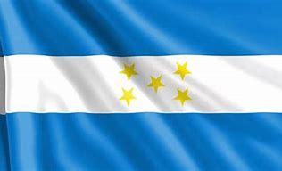

Bandera
La bandera de Honduras tiene franjas azul y blanca con cinco estrellas, que representan la unión centroamericana.
La bandera de Honduras tiene franjas azul y blanca con cinco estrellas, que representan la unión centroamericana.
El escudo de Honduras muestra montañas, herramientas y el mar, simbolizando los recursos naturales del país.
Honduras se independizó en 1821 y es conocida por sus tradiciones culturales y riquezas naturales.
Honduras tiene una extensión de 112,492 km².
Copán es un sitio arqueológico maya famoso por sus esculturas y arquitectura antigua.
Conocidas por sus playas y arrecifes de coral, son un destino turístico popular en Honduras.
Un parque natural en las montañas de Honduras, ideal para senderismo y observación de flora y fauna.